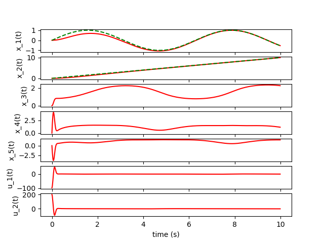

Epsilon point control of the smooth differential drive model
This is repo shows an example of epsilon point control of the smooth differential drive model. The controller is implemented in python and simulations are done in three forms. The first is a basic integration simulation to show that the system is working as expected. The second is a matplotlib animation of the system. The third is a simulation in gazebo and ROS2.
Introduction
The unicycle model is a common state space representation to express a differential drive robot. The unicycle model state consists of its x and y positions $x_1, , x_2$ it's orientation $\phi$, it's forward velocity $\upsilon$ and it angular velocity $\omega$ This state expressed in vector form is then
x = \begin{bmatrix} x_1 \\ x_2\\ \phi\\ \upsilon\\ \omega\end{bmatrix}$
The dynamics of this system are then defined by $\frac{d}{dx}$ which are expressed by
\dot{x} = \begin{bmatrix}\upsilon\cos{\phi}\\ \upsilon \sin{\phi}\\ \omega \\ a \\ \alpha \end{bmatrix}
Why epsilon point control
The difficulty with controlling this system is that it contains what is called "non-holonomic" constraints which are non integratable constraints. The constraint with this system is that it cannot move orthogonal to it's current orientation. To alleviate this we utilize something called epsilon point control. This basic idea is that if a robot is traveling on a path there is a point $\epsilon$ away that does not have that constraint. So instead of trying to control the robots position we control the position of this point.
Math (You can skip this if you want but it is cool!)
Definition of epsilon state
We can define the point that is $\epsilon$ away as $y_\epsilon$.
y_\epsilon = \begin{bmatrix}x_1\\ x_2\end{bmatrix} + \epsilon \begin{bmatrix}\cos{\phi}\\\sin{\phi}\end{bmatrix}
To get the full state we must also take the first and second derivatives of $y_\epsilon$.
R_{\epsilon} = \begin{bmatrix} \cos{\phi} & - \epsilon\sin{\phi} \\ \sin{\phi} & \epsilon{\cos{\phi}}\end{bmatrix}, \chi_\epsilon = \begin{bmatrix} 0 & - \epsilon\omega \\ \epsilon\omega & 0 \end{bmatrix}, \, \bar{a} = \begin{bmatrix}a\\ \alpha\end{bmatrix}, \, \bar{\upsilon} = \begin{bmatrix}\upsilon\\ \omega\end{bmatrix}
\dot{y}_\epsilon = R_{\epsilon}\bar{\upsilon}, \, \ddot{y}_\epsilon = R_{\epsilon} \chi_\epsilon\bar{\upsilon} + R_{\epsilon}\bar{a}$
Feedback linearization
$\ddot{y}_\epsilon$ is a function of $\bar{a}$ which is the control inputs of the system so solving for this will give us the control inputs that will allow us to follow a path.
\bar{a} = R_{\epsilon}^{-1}(\ddot{y}_\epsilon - R_{\epsilon} \chi_\epsilon\bar{\upsilon})$$
using this we can create an feed back linearized system.
\begin{bmatrix}\dot{y}_\epsilon \\ \ddot{y}_\epsilon\end{bmatrix} = Ay + Bu, \text{ where } y = \begin{bmatrix}y_\epsilon \\ \dot{y}_\epsilon \end{bmatrix}
\dot{y} = \begin{bmatrix}
0 & 0 & 1 & 0\\
0 & 0 & 0 & 1\\
0 & 0 & 0 & 0\\
0 & 0 & 0 & 0
\end{bmatrix}y + \begin{bmatrix}
0 & 0\\
0 & 0\\
1 & 0\\
0 & 1\end{bmatrix}u
Finding control gains for the system
Now that we have a linearized system we can find the control gains for the system. This can be done with either pole placement or LQR. However, since I will eventually be controlling a turtlbot3 robot there and the maimum linear velocity is 0.26 m/s and the maximum angular velocity is 1.82 rad/s I will use LQR to find the control gains. This lends itself to using bryson's method to define our Q matrix. The gain matrix is found with the following.
k = lqr(A,B,Q,R)\, \text{ where } Q = \begin{bmatrix}1e-6 & 0 & 0 & 0\\
0 &1e-6 & 0 & 0 \\
0&0&\frac{1}{.26^2} & 0\\
0 & 0 & 0 & \frac{1}{1.86^2}
\end{bmatrix}, R = I \in \mathbb{R}^2$$
The control input for the linearized system is then
$$ u_y = u_{ff} - k (y - y_{des})$$
u_{ff} = \ddot{y}_\epsilon
$y_{des}$ is the desired state of the system.
This control can then be converted to the control for the unicycle model by the following equations.
\begin{bmatrix}a\\ \alpha\end{bmatrix} = R_{\epsilon}^{-1} u_y - \hat{\omega}\bar{v}
Converting Unicycle to Smooth Differential Drive
The unicycle model is not the most realistic model of a differential drive robot. In reality we need to control the rotation for each of the robots wheels. The smooth differential drive model is similar to the unicycle model but just swaps the velocity terms for left and right wheel velocities. The smooth differential drive model is defined by the following equations.
$$ \dot{x} = \begin{bmatrix} \frac{r}{2}(w_r+w_t)\cos(\theta)\ \frac{r}{2}(w_r+w_t)\sin{\theta}\ \frac{r}{L}(w_r-w_l)\ u_r\ u_l \end{bmatrix}, , \begin{bmatrix} v = \frac{r}{2}(w_r + w_)\ w = \frac{r}{L}(w_r-w_l) \end{bmatrix} ,, x = \begin{bmatrix} q_1\ q_2\ \theta\ w_r\ w_l \end{bmatrix} $$
The conversion can be done by solving for the setting $u_r$ and $u_l$ equal to the derivative of the second vector $v$ and $w$ above and solving for $u_r$ and $u_l$.
Skipping some algebra the control inputs for the smooth differential drive model are
$$u_r = \frac{a}{r} - \frac{L}{2r}\alpha, , u_l = \frac{a}{r} + \frac{L}{2r}\alpha$$
Trajectory tracking
Trajectory tracking is done by defining the desired state of the $y_\epsilon$ system and finding its first and second derivatives. For this simulation I choose the trajectory to be
y = \begin{bmatrix}x_1\\x_2\end{bmatrix} = \begin{bmatrix}\sin{t}\\t\end{bmatrix}
Basic Integration Simulation
Before using a simulation of the system a basic integration simulation was done to make sure that the system was working as expected. The results of this simulation are shown below.

This is shows that behavior of the system is as expected as time goes on the trajectory converges.
MatPlotLib Animation
Next i created a basic animation using matplotlib where I utilize the state of the integrated system to move an arrow around on a blank plot. The results of this simulation are shown below.

A little more interesting than a plot but still not very exciting.
Gazebo and ROS2 Simulation
Next I took the controller code and implemented into the ROS2 framework and simulated it in gazebo. I used a basic turtle bot and recalulated the forward and angular velocity of the turtle bot using the smooth differential drive model and published this on the cmd_vel topic. The results of this simulation are shown below.

Conclusion
This was a fun project and I learned a lot about differential drive robots and how to control them. I also learned a lot about ROS2 and gazebo. I think that this is a good way to control a differential drive robot and I think that it would be interesting to see how this would work on a real robot.
Installation and Running ROS2 Simulation
The ros simulation requires ROS2 humble and gazebo 11. To install ROS2 follow the instructions here. To install gazebo 11 follow the instructions here. Once these are installed you can clone this repo into your ros workspace and run the following commands.
To download the package create a ros workspace and clone this repo into the src folder.
mkdir -p ~/ros2_ws/src
cd ~/ros2_ws/src
git clone https://github.com/timdodge54/epsilon_point_control.git
Install python dependencies
pip3 install -r requirements.txt
Then build the package
cd ../..
colcon build --symlink-install
Then source the package
source install/setup.bash
Then run the ros2 simulation
export TURTLEBOT3_MODEL=burger
ros2 launch epsilon_control launch_controller_turtle_sim.launch.py